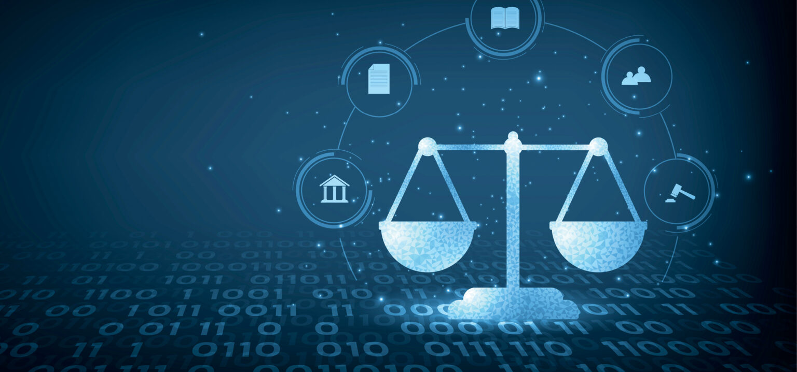

Modulo 1 - CONCEPTOS BÁSICOS DE DERECHO INFORMÁTICO
La Tecnologia y el Derecho en Guatemala.

La tecnología ha transformado la manera en que las personas se comunican, trabajan y realizan actividades comerciales en Guatemala y en todo el mundo. El crecimiento del internet, las redes sociales, las plataformas digitales y los sistemas informáticos ha generado nuevas oportunidades, pero también nuevos desafíos legales relacionados con la protección de datos, la seguridad informática y los derechos digitales. El Derecho Informático surge como una rama jurídica encargada de regular el uso de la tecnología y garantizar que las actividades digitales se desarrollen de manera segura, ética y conforme a la ley. En Guatemala, el avance tecnológico ha impulsado la necesidad de crear normas y mecanismos que protejan tanto a las empresas como a los ciudadanos frente a delitos informáticos, fraudes electrónicos y el uso indebido de la información. Actualmente, temas como la ciberseguridad, la privacidad de los datos personales, los contratos electrónicos y las firmas digitales forman parte de la realidad tecnológica del país. Por ello, es fundamental comprender la relación entre la tecnología y el derecho, ya que ambos trabajan conjuntamente para promover un entorno digital más seguro, confiable y accesible para todos. Este portafolio tiene como objetivo presentar distintos aspectos del Derecho Informático en Guatemala, abordando conceptos importantes relacionados con la protección de la información, los delitos cibernéticos y la regulación legal de las herramientas digitales utilizadas en la actualidad.
La Relacion entre el Derecho y la Informatica.

La relación entre el Derecho y la Informática surge debido al crecimiento constante de la tecnología en la sociedad moderna. La informática ha transformado la forma en que las personas almacenan información, se comunican, realizan negocios y acceden a diferentes servicios digitales. Como consecuencia, el derecho ha tenido que adaptarse para regular el uso adecuado de estas herramientas tecnológicas y garantizar la protección de los derechos de las personas. El Derecho Informático es la rama jurídica encargada de estudiar y regular los problemas legales relacionados con el uso de computadoras, redes, internet y sistemas digitales. Esta relación permite establecer normas que ayuden a prevenir delitos informáticos, proteger la privacidad de los usuarios y controlar el uso correcto de la información digital. Por otro lado, la informática también beneficia al derecho, ya que facilita el almacenamiento de documentos, la gestión de expedientes electrónicos, las firmas digitales y la automatización de procesos legales y administrativos. Gracias a la tecnología, actualmente muchas instituciones pueden realizar trámites de forma más rápida, segura y eficiente. En Guatemala y en muchos otros países, la relación entre el derecho y la informática continúa creciendo debido al avance de la transformación digital. Por ello, es importante comprender cómo ambas áreas trabajan en conjunto para crear un entorno tecnológico más seguro, confiable y regulado para toda la sociedad.
Nuevos Criterios de Relación entre el Derecho y las TIC.

El avance de las Tecnologías de la Información y la Comunicación (TIC) ha generado nuevas formas de interacción en la sociedad, lo que ha obligado al derecho a evolucionar y adaptarse a los cambios tecnológicos. Actualmente, las TIC forman parte esencial de la vida cotidiana, ya que permiten el acceso inmediato a la información, la comunicación digital y la realización de actividades comerciales, educativas y laborales a través de internet. Los nuevos criterios de relación entre el derecho y las TIC se enfocan en establecer normas y principios que regulen el uso responsable y seguro de la tecnología. Esto incluye aspectos importantes como la protección de datos personales, la privacidad en línea, la seguridad informática, el comercio electrónico y la prevención de delitos cibernéticos. Además, las TIC han transformado la manera en que funcionan muchas instituciones legales y administrativas. Hoy en día, es posible realizar trámites digitales, utilizar firmas electrónicas, almacenar documentos en sistemas informáticos y desarrollar procesos judiciales con apoyo tecnológico, lo que mejora la eficiencia y rapidez de los servicios. Sin embargo, el crecimiento tecnológico también presenta desafíos importantes relacionados con el uso indebido de la información, el acceso no autorizado a sistemas y la vulneración de derechos digitales. Por esta razón, el derecho y las TIC deben trabajar conjuntamente para crear un entorno digital más seguro, moderno y regulado, que permita aprovechar los beneficios de la tecnología sin afectar los derechos fundamentales de las personas.
Documentos Electrónicos, Contratos Informáticos y Contratos Electrónicos

El desarrollo de la tecnología ha permitido que muchas actividades legales y comerciales se realicen de manera digital, facilitando la comunicación y el intercambio de información a través de medios electrónicos. En este contexto, los documentos electrónicos, los contratos informáticos y los contratos electrónicos se han convertido en herramientas fundamentales dentro del Derecho Informático. Los documentos electrónicos son archivos digitales que contienen información almacenada mediante sistemas informáticos. Estos documentos pueden incluir textos, imágenes, correos electrónicos, formularios digitales y cualquier otro archivo creado o transmitido electrónicamente. Actualmente, tienen gran importancia porque permiten agilizar procesos administrativos y reducir el uso de documentos físicos. Por otro lado, los contratos informáticos son acuerdos relacionados con bienes o servicios tecnológicos, como el desarrollo de software, mantenimiento de sistemas, licencias de programas y servicios de tecnología. Estos contratos establecen derechos y obligaciones entre las partes involucradas para garantizar el correcto funcionamiento y uso de los recursos informáticos. Asimismo, los contratos electrónicos son acuerdos celebrados a través de medios digitales, especialmente mediante internet. Este tipo de contrato permite realizar transacciones comerciales de manera rápida y segura, utilizando herramientas como firmas electrónicas y plataformas digitales. Gracias a los avances tecnológicos, los contratos electrónicos poseen validez legal siempre que cumplan con los requisitos establecidos por la ley. En la actualidad, estos elementos representan una parte esencial de la transformación digital, ya que facilitan las actividades comerciales y administrativas, fortaleciendo la eficiencia, seguridad y modernización de los procesos legales y tecnológicos.
Regresar